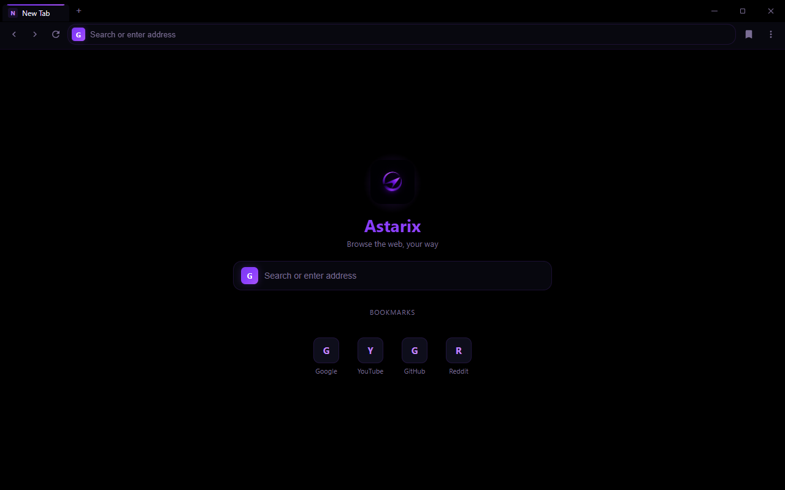
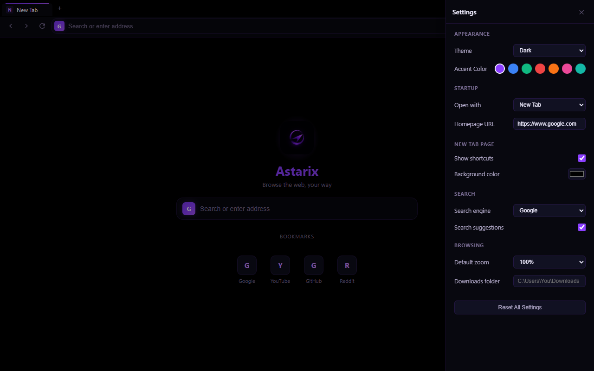

ASTARIX
Browse the web, your way. Tabs, themes and zero telemetry,
running on your PC in under a minute.
git clone https://github.com/mrlurix/astarix-browser.git
Everything you need to browse
Multi-tab browsing with per-tab history, reload, keyboard shortcuts, page zoom from 30% to 300%, and a Chrome-style right-click menu.
One address bar for URLs and searches. Three engines — Google, Bing, DuckDuckGo — with live suggestions and one-click engine cycling.
Dark and light themes, seven accent colors, custom start-page background, bookmark shortcuts, your own homepage and default zoom.
No account, no cloud, no telemetry. Risky permissions denied, every download asks first, all data stays on your machine.
Save-As flow with filename sanitization, a built-in download manager with progress states, and a custom downloads folder.
Load unpacked Chromium extensions from a folder. Manifests are screened first — dangerous permissions and <all_urls> access are blocked.
Take a look


Up and running in 3 steps
Download the portable .exe from the Releases page
Double-click to run — no install, no admin rights
Browse, then make it yours in Settings